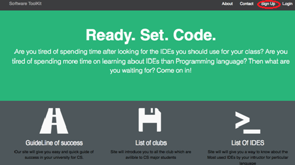
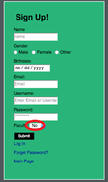
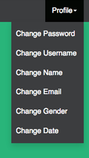
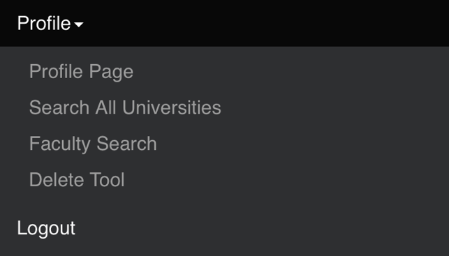
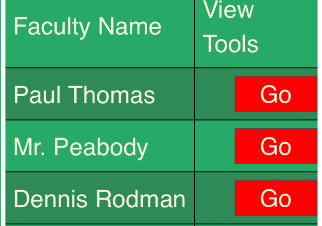
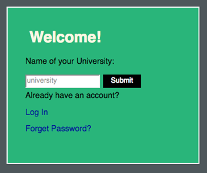
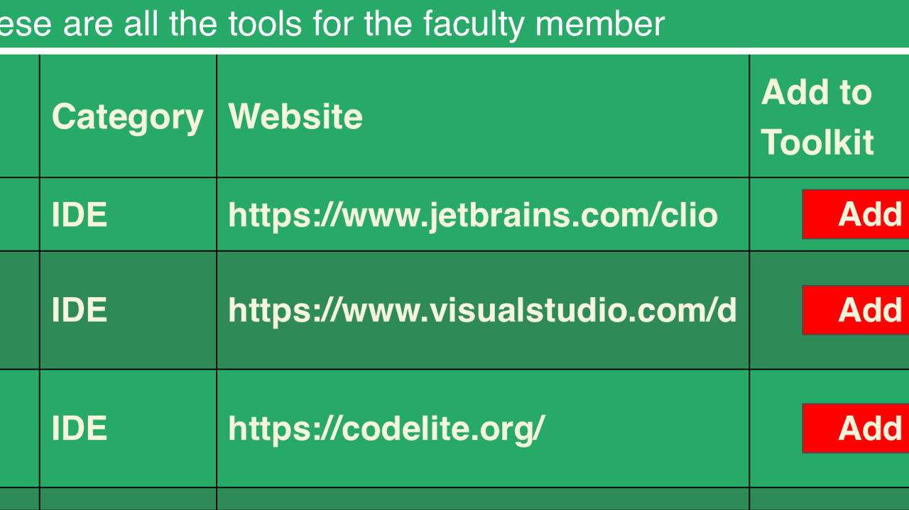

As a student account was created, a student user will be able to create their own toolbox to incorporate tools added by any Faculty User. These tools are available upon university searching and tools will be unique to specific universities. The student user has full flexibility to create the most useful experience through their toolbox to help guide them to an easier education. Students are able to view guidelines of success, clubs, and IDE's unique to a university. Students can not add tools to the university toolbox, but only can incorporate them into their own. Students can change any sign up details when necessary if changes arise relating to their personal information.
On sign-up:
From the main Software ToolKit page, click the Sign Up option from the top right on the menu bar. Select "No" in the faculty member option from the drop down box to create the Student User experience. Fill out the rest of the fields as well.
Note that later after an account is created and signed in, the fields filled out in the Sign Up form can be changed from the profile page on the profile menu drop down.
After sign-up:
You can now select the Login option from the top right of the menu bar (next to Sign Up). Once signed in as a User, you can view the tools available by Guideline of Success, List of Clubs, and List of IDE's. For example, we will try IDE's. Click the IDE icon (not the icon below).
From the profile page, the profile drop down on the menu bar will open many new opportunities.
The Faculty Search option will take you to the created faculty members with their own toolkits created.
From the profile menu, Search All Universities will show other University tool kits created by faculty members associated with the respected University. The University must be entered in the search field by the exact spelling a University was created.
The most functional part of this account is the ability to use tools from the profile page with the tools provided by faculty members directly or by university.

Inside a tool kit created already from searching faculty members or universities, a tool can be added to populate the profile page which begins empty.
From the profile page drop down option on the top tool bar, a tool can be deleted from a student tool kit.

Make your student education easy!